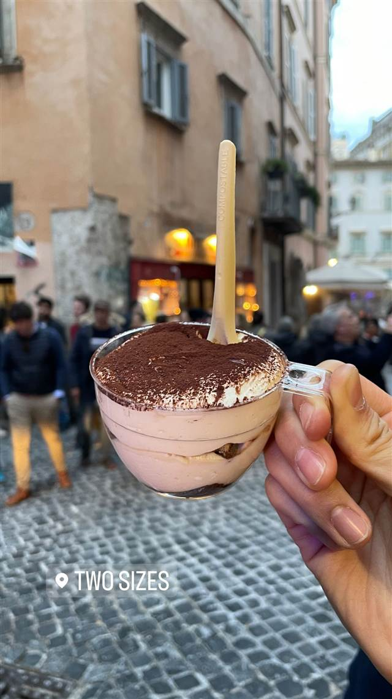

Two Sizes
小と大の2サイズから選べる5種のティラミス専門店
TWO SIZES
ナヴォーナ広場近くにあるティラミス専門店。店名の通り各フレーバーを小・大2サイズで提供し、フレッシュなマスカルポーネを使った定番から変わり種まで5種のティラミスが楽しめる、Tripadvisorでも高評価の一軒。
TRIVIA
豆知識
- 店名『Two Sizes』の通り、各フレーバーのティラミスを小・大の2サイズから選べる
REVIEWS
世間の評判
4.8Googleマップ
ティラミスの濃厚な美味しさ
- ティラミスをローマ一美味しいと評価する声が多い
- ピスタチオ味を勧める声が複数ある
- 行列でも提供が早く待った甲斐があるという声が多い
- クリームが多くビスケットとのバランスが良くないという指摘もある
Tripadvisor 口コミ4491件
| 看板 | ティラミス（定番・ピスタチオ・ピーナッツバター・キャラメル・ストロベリーの5種）、カンノーロ |
|---|---|
| こだわり | フレッシュなマスカルポーネと濃いエスプレッソを使用 |
| 掲載・評価 | Tripadvisor 2025 Travelers' Choice受賞 |
| どこから | 海外 |
| 行くなら | 行列 |
| 場所 | ナヴォーナ広場周辺（バス Chiesa Nuova） Via del Governo Vecchio 88, 00186 Roma, Italia |
| メモ | ナヴォーナ広場から徒歩圏、テイクアウトも可能な小さな専門店 |
食べたもの：ティラミス
NEARBY
近い店・同じ系統の店
-
 ケーキ・パフェ 目白駅
AIGRE DOUCE（エーグルドゥース）
クープ・デュ・モンド準優勝シェフの苺のショートケーキ
昼 ¥1,000～¥1,999 夜 ¥1,000～¥1,999
ケーキ・パフェ 目白駅
AIGRE DOUCE（エーグルドゥース）
クープ・デュ・モンド準優勝シェフの苺のショートケーキ
昼 ¥1,000～¥1,999 夜 ¥1,000～¥1,999
-
 ケーキ・パフェ 自由が丘
パティスリー パリ セヴェイユ
ラデュレ仕込みの技が光るカヌレ、食べログ百名店の一軒
昼 ¥1,000～¥1,999 夜 ¥1,000～¥1,999
ケーキ・パフェ 自由が丘
パティスリー パリ セヴェイユ
ラデュレ仕込みの技が光るカヌレ、食べログ百名店の一軒
昼 ¥1,000～¥1,999 夜 ¥1,000～¥1,999
-
 ケーキ・パフェ 代々木公園駅
ナタ・デ・クリスチアノ（Nata de Cristiano's）
姉妹店の人気デザートが独立したポルトガル風エッグタルト
昼 ～¥999 夜 ～¥999
ケーキ・パフェ 代々木公園駅
ナタ・デ・クリスチアノ（Nata de Cristiano's）
姉妹店の人気デザートが独立したポルトガル風エッグタルト
昼 ～¥999 夜 ～¥999
-
 ケーキ・パフェ 白金高輪駅
メゾン・ダーニ（MAISON D'AHNI）
本場ビアリッツの老舗で出会った郷土菓子ガトーバスク
昼 ¥1,000～¥1,999
ケーキ・パフェ 白金高輪駅
メゾン・ダーニ（MAISON D'AHNI）
本場ビアリッツの老舗で出会った郷土菓子ガトーバスク
昼 ¥1,000～¥1,999
-
 ケーキ・パフェ 武蔵小山
パティスリィ ドゥ・ボン・クーフゥ 武蔵小山本店
月替わりパルフェは完全予約制のイートイン限定で持ち帰りができない
昼 ¥3,000～¥3,999 夜 ¥4,000～¥4,999
ケーキ・パフェ 武蔵小山
パティスリィ ドゥ・ボン・クーフゥ 武蔵小山本店
月替わりパルフェは完全予約制のイートイン限定で持ち帰りができない
昼 ¥3,000～¥3,999 夜 ¥4,000～¥4,999
-
 ケーキ・パフェ 銀座
珈琲専門店 三十間 銀座本店
地下の隠れ家で味わうふわふわチーズケーキとコーヒー
昼 ¥1,000～¥1,999 夜 ¥1,000～¥1,999
ケーキ・パフェ 銀座
珈琲専門店 三十間 銀座本店
地下の隠れ家で味わうふわふわチーズケーキとコーヒー
昼 ¥1,000～¥1,999 夜 ¥1,000～¥1,999